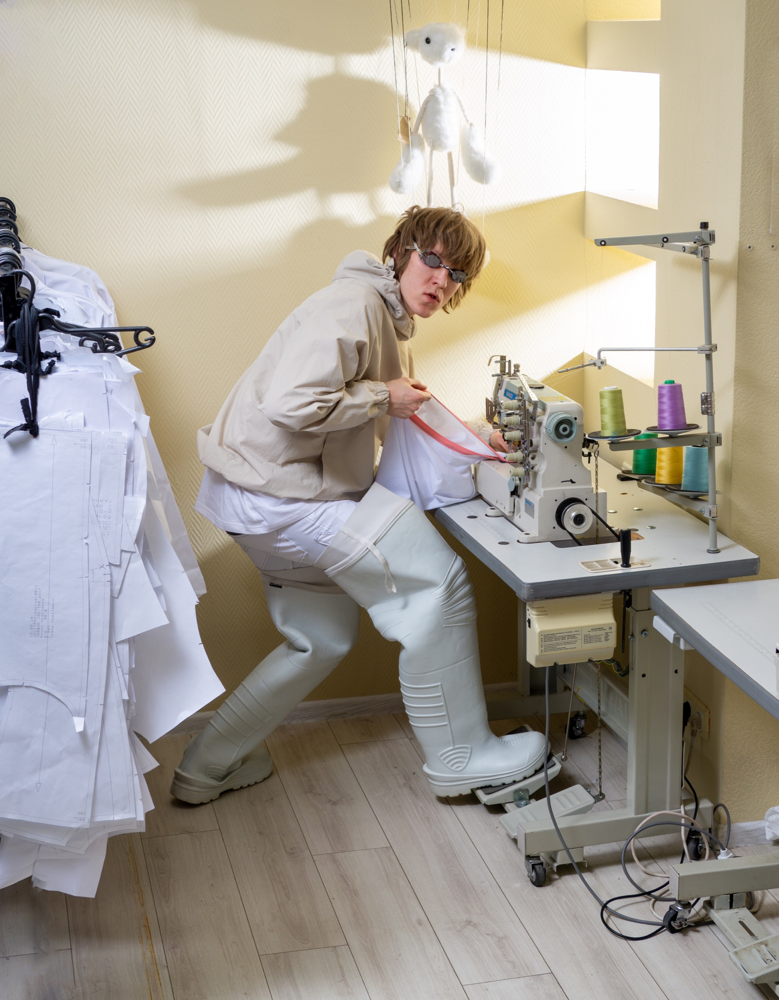
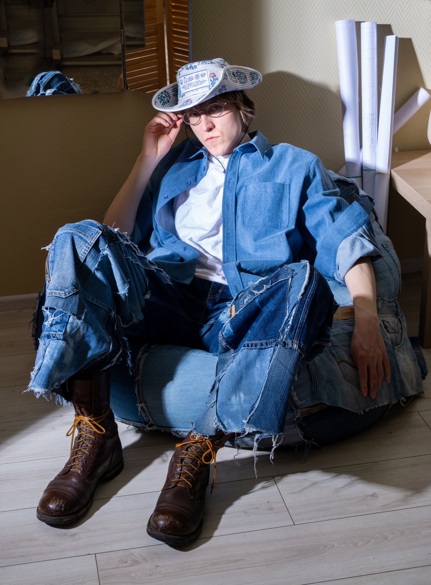
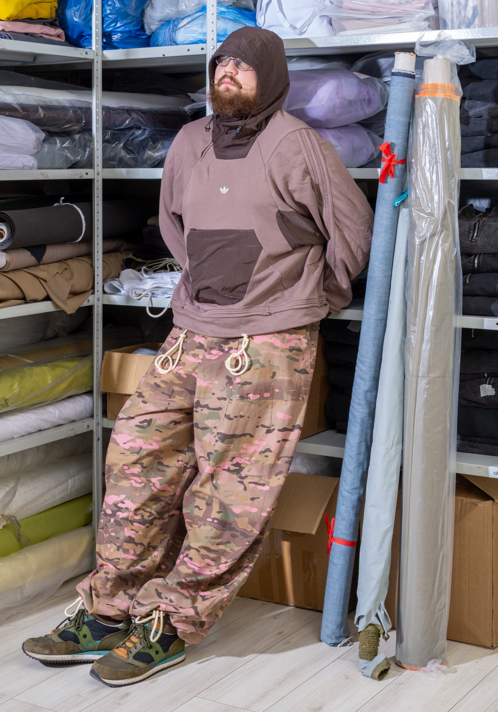
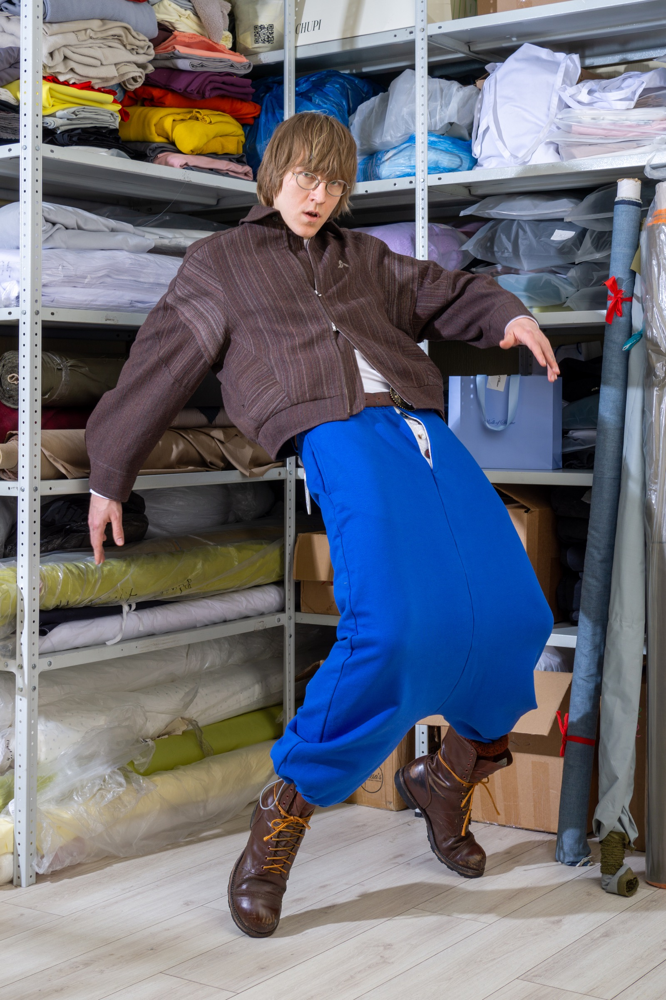
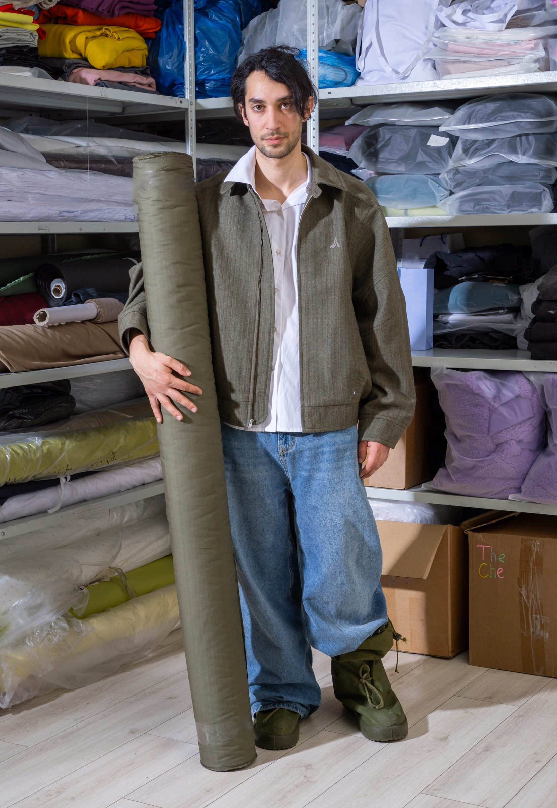
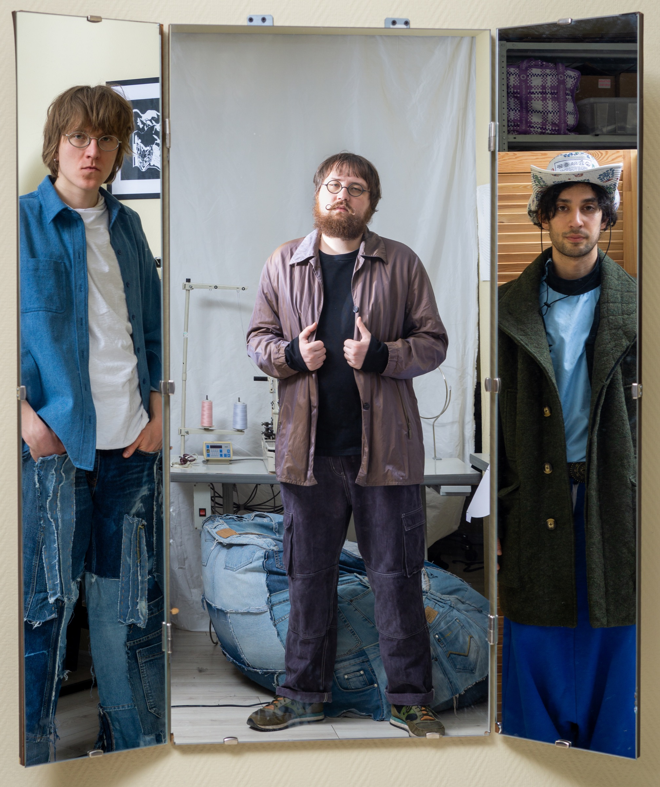
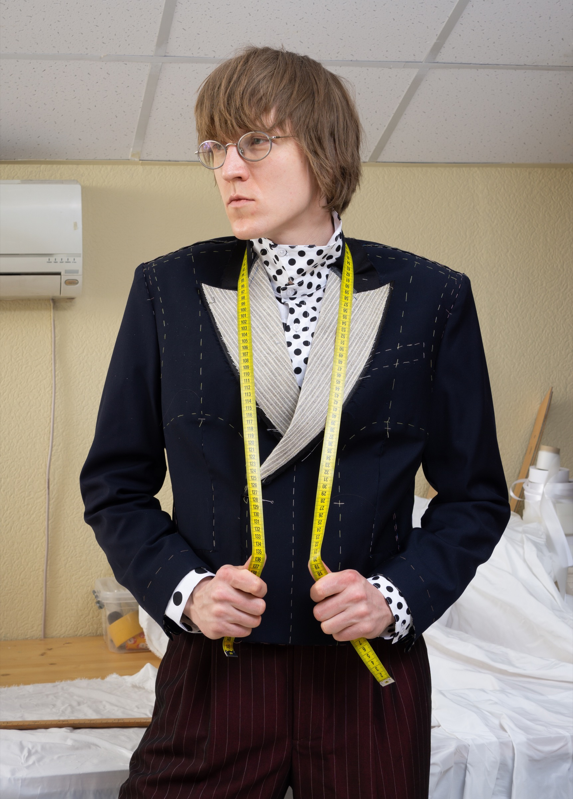
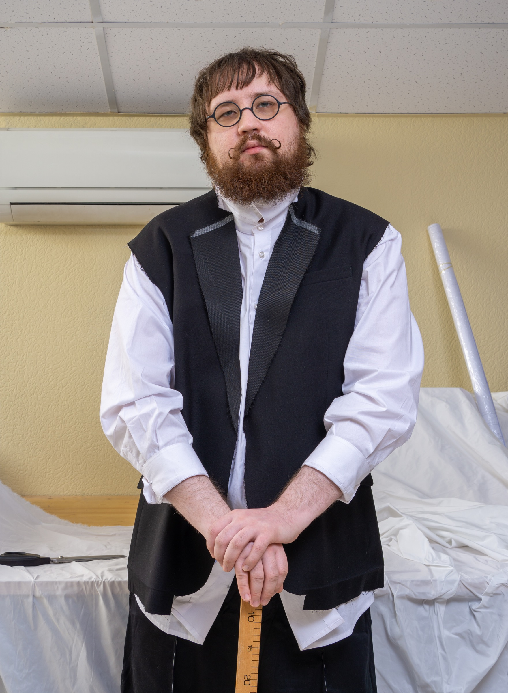
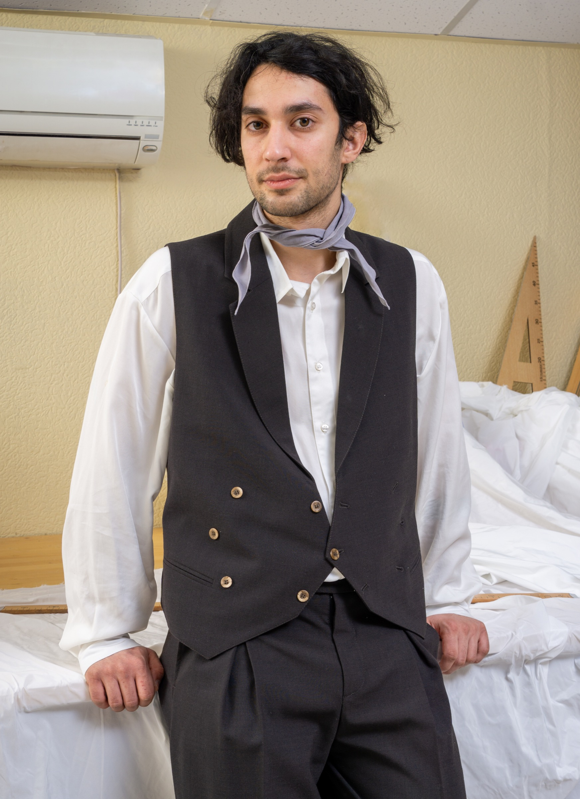

Фотограф: Мария Абдулаева Стилист: Арсений Бетехтин Продюсер: Гасанов Денис В кадре: Арсений Бетехтин, Егор Рыжов, Гасанов Денис Текст: Кира Ким
Мы поговорили с основателем и CEO UNIFORMS Арсением Бетехтиным, а также с ключевыми участниками команды о том, как сегодня устроен рынок корпоративной одежды, почему мерч часто не работает так, как задумывался, и что на самом деле стоит за хорошим продуктом.

На Арсении: снегоболотники — Снежный барс. Остальной образ — UNIFORMS.
— Почему вообще существует UNIFORMS?
Арсений: UNIFORMS — это не компания «с нуля». Это продолжение производства, которое существует с 1993 года под брендом «Невероятная коллекция». За это время мы сделали очень много больших проектов — работали с международными компаниями, одевали S7, делали проекты для Олимпиады, работали с крупными глобальными брендами.
Но это была другая реальность. В 2020 году рынок сильно изменился. Мы потеряли значительную часть клиентов и команды. И стало понятно — нужно пересобирать все. В 2021 году мы сделали ребрендинг и стали UNIFORMS. И уже в этой новой конфигурации мы оказались в ситуации, где по сути были просто производством.
К нам начали приходить с запросами, и очень быстро стало видно — мы можем делать это сильно лучше. Но сами запросы часто были собраны неправильно. И тогда стало понятно: если мы не будем участвовать в формировании запроса — результата не будет.

На Егоре: весь образ — UNIFORMS.
На Арсении: брюки и рубашка — Siniy Vsadnik. Пиджак — Personal project.
На Денисе: брюки, жилет, рубашка — Name. Платок — ГЭС2 x LIME.
Рынок не слабый. Он просто не умеет собирать продукт.

На Арсении: брюки — Kruzhok x Levis. Футболка — Name. Рубашка — UNIFORMS. Шляпа — Kruzhok.
— Что вас больше всего раздражает в рынке?
Арсений: Неспособность сказать «нет». Ghosting придумали не зумеры. Его придумали менеджеры, которые не умеют честно отказать.
И вторая вещь — бесплатная работа. Рынок привык, что можно получить идею, расчёты, дизайн — и ничего за это не заплатить.
Егор: В этот момент работа превращается в имитацию.
Арсений: Мы в это не играем.
.jpg)
.jpg)
-Edit.jpg)

На Егоре: брюки — Siniy Vsadnik. Худи — Hamcus x Adidas.

На Арсении: брюки — Siniy Vsadnik. Куртка — Archivarius.
— Что вы делаете по-другому?
Егор: Обычно идея живёт отдельно от производства. Её сначала придумывают, потом пытаются реализовать, и в какой-то момент всё начинает сыпаться. Моя задача — чтобы этого не происходило. Я смотрю на проект с точки зрения реальности: материалы, поставщики, сроки, экономика. Если что-то не собирается — я говорю об этом сразу.
Арсений: Мы не упрощаем — мы уточняем. И за счёт этого результат становится сильнее.
— Как вы понимаете, что продукт получился?
Арсений: Если вещь существует только как идея — это не продукт. Если её невозможно нормально произвести — это тоже не продукт. Продукт — это когда идея, конструкция и производство совпали.
Егор: И когда это можно повторить без потери качества.

На Денисе: джинсы — Ushatava. Рубашка — UNIFORMS. Куртка — Archivarius.
Плохой продукт появляется не из-за сложности. А из-за неточности.

— Как устроена команда?
Арсений: Я отвечаю за результат и общее видение. За то, чтобы проект вообще имел смысл.
Егор: Я отвечаю за реализацию. Экономика, поставщики, производство.
Денис: А я отвечаю за то, как этот продукт живёт дальше.
— Что значит «живёт дальше»?
Денис: Мы делаем не просто вещи. Это всегда носитель смысла — ценностей компании, её настроения, её позиции. Это нужно правильно показать. Съемка, визуал, команда, атмосфера — это всё влияет на то, как вещь считывается. Если это не сделать — половина работы теряется.
Арсений: В этот момент вещь становится инструментом коммуникации.
Можно сделать хорошую вещь и убить её плохой подачей.
.jpg)
.jpg)
.jpg)



— Как вы работаете с клиентами?
Егор: Мы не делаем «как попросили». Если запрос нерабочий — мы говорим об этом сразу.
Арсений: И почти всегда предлагаем альтернативу. Потому что наша задача — не выполнить ТЗ, а сделать продукт, который реально работает. Иногда это полный цикл. Иногда — быстрый запуск. Процесс подстраивается под задачу, а не наоборот.
— Были проекты, где это особенно проявилось?
Арсений: Практически все. Например, проекты уровня ГЭС-2 — там нет задачи «сшить тираж». Это всегда совместная работа: от первых образцов до финальной примерки, с постоянной доработкой по ходу процесса.
Егор: Это не «исполнение». Это сборка результата.
— Что происходит, когда проект становится сложным?
Арсений: Сложный проект — это нормальный проект.
Егор: Сложность — это не проблема. Проблема — когда нет понимания, что ты делаешь.
— С кем вам комфортно работать?
Арсений: С теми, кто понимает, что форма — это не просто одежда. Но это не значит, что мы работаем только со сложными задачами.
Егор: У нас есть обширный каталог базовых моделей, который отработан большим количеством заказов и проверен практикой.
Арсений: Поэтому к нам можно прийти с любым запросом — от сложной системы до базового тиража.
— Что насчёт простых вещей?
Егор: Даже базовые вещи мы делаем интересно. Это не просто футболка с принтом.
Арсений: Это вещь, которая всё равно несёт смысл и поддерживает позицию компании.
Денис: И мы помогаем этот смысл правильно показать. Даже простая форма, если её грамотно подать, становится частью истории и частью идентичности.